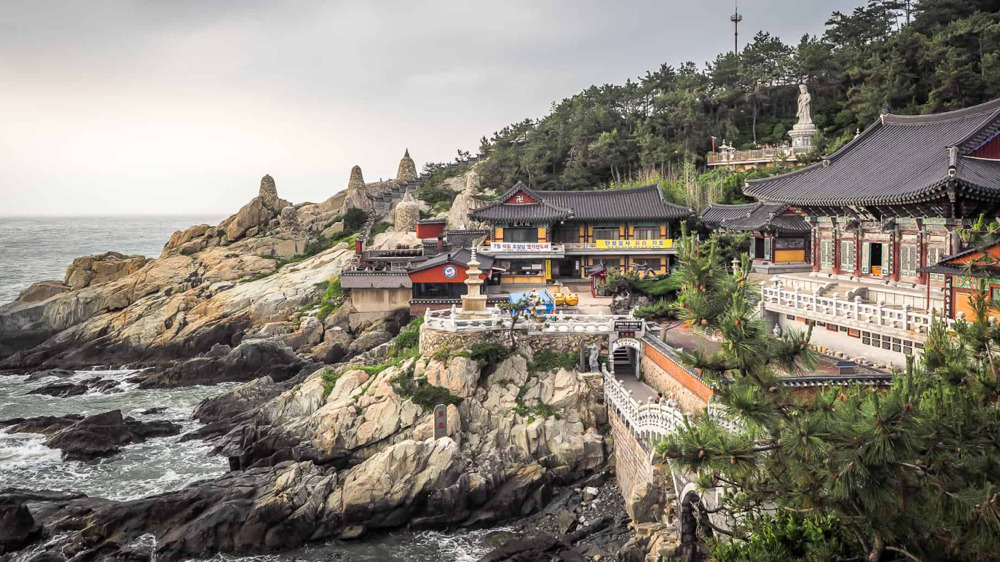
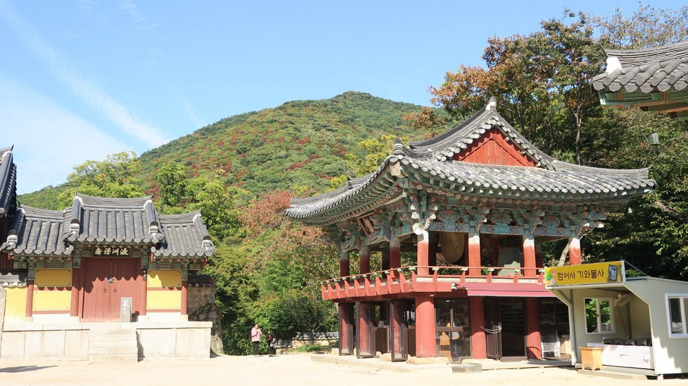
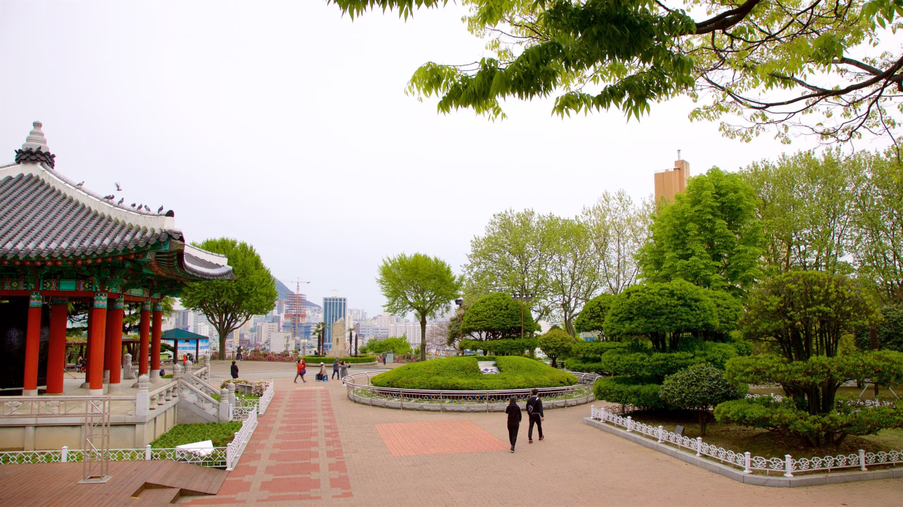

Busan, a estrela em ascensão da Coreia do Sul, oferece de tudo, desde churrascarias de primeira linha até
tradicionais termas de areia e mar.
Aqui, exploramos a segunda cidade da Coreia do Sul e descobrimos as suas ofertas culinárias.
PARA OS AMANTES DE HISTÓRIA
Descubra 3 destinos imperdíveis em Busan
As atrações de Busan vão desde templos budistas centenários que pontilham as montanhas e o litoral da
cidade até praias imaculadas com águas cristalinas. Esta cidade litorânea tem muitas coisas para
fazer o ano todo - as famílias podem passar o tempo em um aquário à beira-mar, os compradores podem
explorar bairros vibrantes e os amantes da natureza podem desfrutar de longas caminhadas até
mirantes panorâmicos.
Os santuários budistas que pontilham a costa e as montanhas de Busan têm uma arquitetura
impressionante que irá encantar os fotógrafos.

1. Templo Haedong Yonggungsa
O Templo Haedong Yonggungsa é um templo budista localizado no extremo nordeste de Busan. Construído
em 1376, é um dos poucos templos na Coreia construídos à beira-mar – você pode
desfrutar de vistas do Mar do Leste de um lado e de belas montanhas do outro.
Bom para:
História

2. Templo Beomeo-sa
O Templo Beomeo-sa é um dos maiores santuários da Coreia do Sul. Está localizado no alto da borda
leste
da montanha Geumjeongsan e fica distante da agitação da cidade. O Daewungjeon Hall do templo é um
exemplo bem preservado da arquitetura da Dinastia Joseon.
Bom para:
História

3. Parque Yongdusan
O Parque Yongdusan, localizado no centro de Busan, abriga alguns dos monumentos mais importantes da
cidade. Você pode ver vistas espetaculares do topo da Torre Busan. Em 120 metros de altura, o parque
tem
2 museus - o famoso Instrumentos musicais tradicionais e o World Model Exhibit Hall.